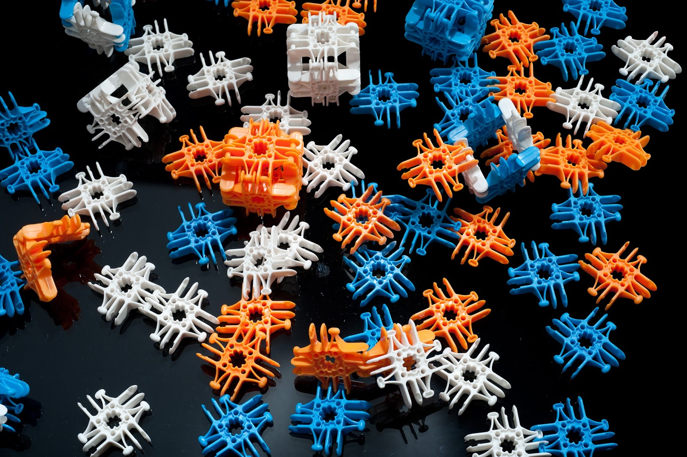

Extend Yourself
There are many ways that you can make your marble run more fun and challenging.
- Change the surface of the bridge by adding a piece of felt or sandpaper. Then measure the amount of time it takes the marble to be transported from the top to the bottom of the marble run. Time can be measured by:
- observing and counting,
- using a stopwatch,
- a timer on your phone or a sand timer.
Describe how you changed the surface of the ramp on your marble run and record your results in your e-portfolio.
- Using your e-portfolio, explain how friction causes the marble to slow down as it moves through the marble run.
- Design a marble run that allows the marble to change direction at least three times. Explain your process in your e-portfolio.